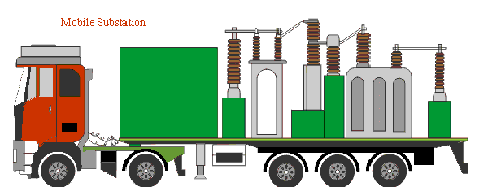

Definition of Mobile Substation
Description of Mobile Substation
Safety and Environmental Considerations of Mobile Substation
Mobile Transformer
Design Considerations of Mobile Transformer
MVA Rating of Mobile Transformer
Insulation Systems of Mobile Transformer
Multiple Voltages of Mobile Transformer
Provision for Star Delta Re-connection in Mobile Transformer
Mobile Transformer Impedance
Mobile Transformer Losses
Mobile Transformer Noise Level
Typical Features of Mobile Substation for Size Reduction
What is Mobile Substation?
Sometimes it is required to supply power to a particular place in fully temporary basis. Such as at civil contraction or other construction places where huge consumption of electricity is required but after completion of the construction work the necessity of power will not be as high as during construction.
In these cases constructing one permanent outdoor or indoor substation for fulfillment of power supply is not economical. Also a mobile substation is required where there is lack of space for constructing out door substation during any big construction work when consumption of huge power by construction machines is required. Mobile substations are also used to quick restore of electrical service during an outage caused by a storm or other disaster. This can also provide temporary power service during construction of permanent facilities. It also can be used as alternate power service during regular maintenance of existing equipment.
Mobile substation is useful for
1) Emergency Service.
2) New Service .
3) Temporary Service.
Definition of Mobile Substation
The definition of mobile substation or portable substation is a completely self-contained trailer mounted substation consists of transformer, cooling equipment, high voltage switchgear and low voltage switchgear along with metering, protection relaying devices, AC and DC auxiliary power supply, surge protection, and cable connecting arrangement.
Description of Mobile Substation
The mobile substation or portable substation is fully equipped with different power system equipments, and must be able to be shipped from one place to another with fully assembled mode. The overall height and width of the total substation unit should be such that it would meet the State and Federal road regulations. Hence compactness is the main criteria of a mobile substation and for fulfilling this criterion we have to compromise with numbers of parameters of the substation. Set-up time under emergency conditions should also be minimized and it should be maintained within 4 hours.

Different designs of portable substations are available. In some trailer mounted substation there the transformer is placed on 360o rotating bed, which helps to positioning bushing under existing power line with minimum effort and set up time. In that case as only the transformer rotates but the trailer mounted switchgear system can not be repositioned them self with rotation of transformer, hence customer has to provide HV and LV switchgear and protection for the transformer. This is one typical example of portable substation design, and there are many others depending upon customer requirement.
The configuration and size of trailer are mainly determined by the HV & LV voltage classes, number of multiple voltages, MVA rating of transformer, interrupting rating of electrical circuit breaker.
Safety and Environmental Considerations of Mobile Substation
A mobile substation may be placed in a congested public area, hence safety should be a primary concern of that utility. Temporary fencing must be surrounded the substation if it is placed in public area. Special attention should be given in specifications to minimum permitted electrical clearances, interlocking of equipment.
On multiple voltage transformers, it is essential to provide a operational connection chart to be displayed on the substation. This operation connection chart serves to detail all specific arresters, HV switchgear, LV switchgear, and Delta/Star switch positions for each possible configuration. The purpose of this chart is to prevent accidental mal operation which may occur during stressful emergency set-up situations.
Mobile Transformer
Specially designed transformer installed on mobile substation trolley is known as mobile transformer.
Design Considerations of Mobile Transformer
The transformer is the main, largest, heaviest, and costliest equipment in a mobile substation. The main criteria of designing a mobile transformer is to maintain all the required parameter of the transformer within specific limit but at the same time we have to put effort to reduce transformer size, weight and cost, and increase the compactness of the transformer. The transformer design has to be optimized in size and weight for transport ability and required electrical parameters.
MVA Rating of Mobile Transformer
For facilitating road transportation mobile transformer attached to mobile substation are generally manufactured within limit of 60 MVA rating. Generally single incoming and single outgoing feeder is preferred. Current rating of incoming or outgoing feeders should be less than 2000A otherwise the transformer cooling system and associated equipment rating may matter the mobility of substation.
Insulation Systems of Mobile Transformer
Hybrid Nomex insulation are normally preferred for more than 20 MVA mobile substation. But this insulation may not be always required for smaller rated substations. Since Nomex insulation is much expensive. For smaller rated substation Cellulose insulation systems can be used if customer requires and agrees. Mobile transformer is generally rated at 75o C average winding rise over ambient temperatures. A compromise between reduced insulation life and an increased power rating for a given size and weight of transformer can be considered as the transformer is not subjected to be in continuous service throughout its life like stationary electrical power transformer.
Multiple Voltages of Mobile Transformer
It is not economical to construct one mobile substation for any particular HV and LV application. It is not confirmed that every time the requirement of temporary service will be in same voltage system. For utilizing the same substation for different situation there must be the provisions for multiple voltages. Again for any HV system there may be numbers of different LV services to be provided simultaneously. For fulfilling this purpose also mobile transformer should have multiple low voltages. A practical limit is 5 voltages. More than 5 voltages are extremely difficult to product within size and weight restrictions. When 5 low voltages are required, the high voltage should be limited to not more than 2 voltages. When 5 high voltages are required, the low voltage should be limited within 2. But increasing numbers of high and low voltages may affect the voltage regulation of the system. So for providing multiple voltages we have to sacrifice the quality of voltage regulation of transformer.
Provision for Star Delta Re-connection in Mobile Transformer
Internal re-connection is not recommended for mobile application. This can be done by external de-energized switches.
Mobile Transformer Impedance
For reducing size and weight, the impedance of the transformer is increased significantly. It is seen that a 50MVA mobile transformer may have impedance up to 30%. As the impedance of the transformer is high, the voltage regulation becomes poorer which can be compensated by providing the LTC tap range from +/- 10% to +/- 15% or greater which is 2.5% in normal static electrical power transformer.
 by
by